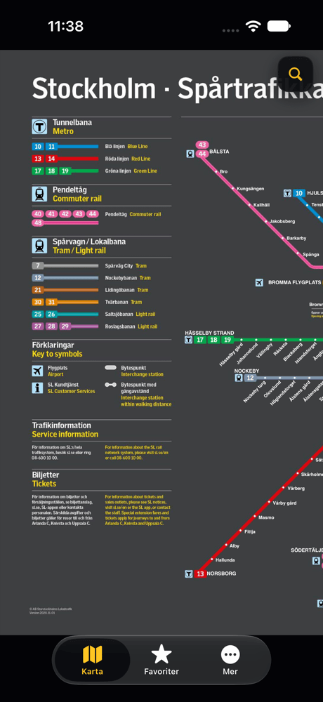
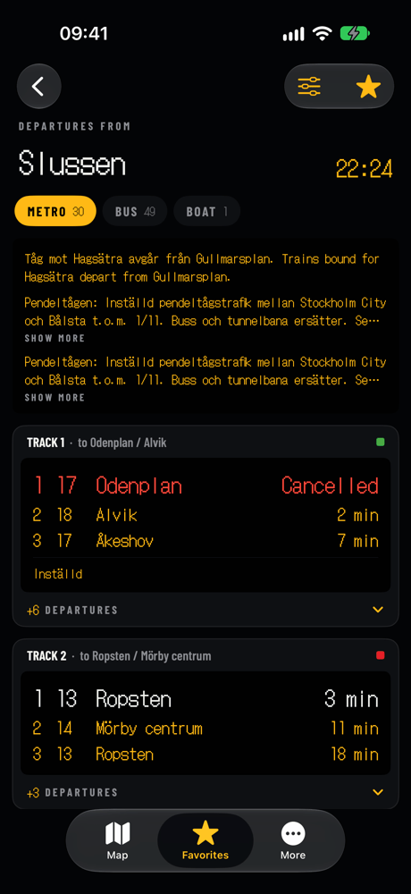
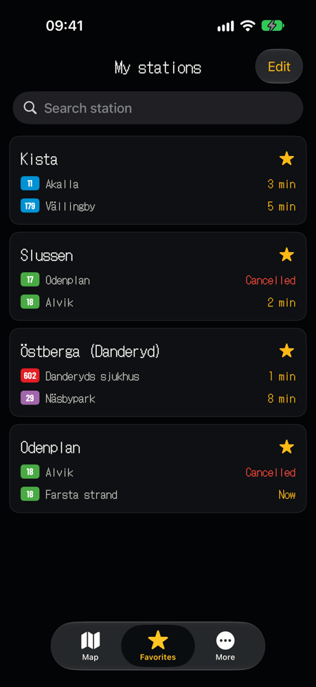
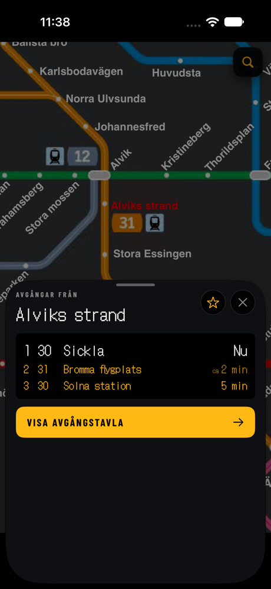
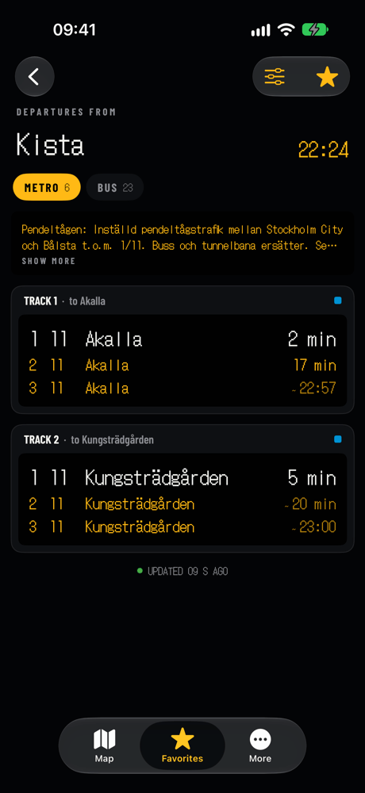
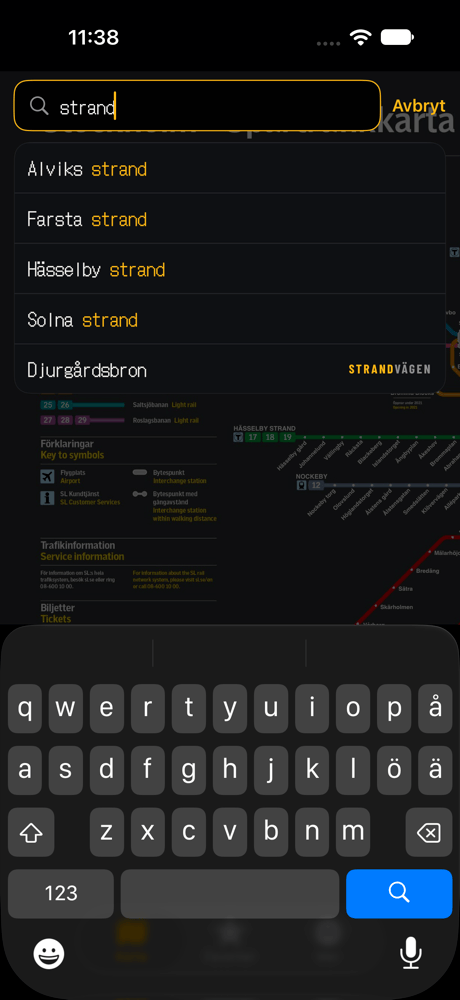
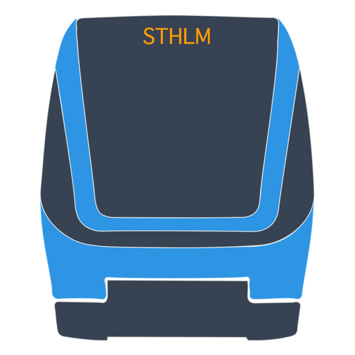

Stockholm departures
on a platform sign
in your pocket
Tap a station on the rail map and see the next metro, commuter train, tram, bus or boat, laid out the way SL's platform signs show it. Free for iPhone and iPad.
4.4 from 59 ratings on the App Store



Why it exists
You know where you're going. You just need the next train.
Journey planners ask for a start, a destination and a time before they tell you anything. Most trips in Stockholm are ones you already know. STHLM Rail opens on the map, so the answer is one tap away.
A typical planner
- Type where you are
- Type where you're going
- Pick a time, then scroll the trip list
- Still unsure which track to walk to
STHLM Rail
- Tap your station on the map
- Read the next three departures right there
- Open the full board, sorted by track
- Cancellations and delays marked in red
Features
Built around the sign you already read every day
The whole rail map, and every station on it is a button
Metro, commuter rail, trams and light rail on one map. Tap a station and a card slides up with its next three departures. Star it, or open the full board.

One sign per track, with the next train in large type
Metro, commuter and tram departures are grouped by track, the way they hang above the platform. Buses and boats are grouped by stop, with the next three times for every line and direction.

Your stations, already showing what leaves next
Star the stations you use and they line up in Favorites, each with its next departures. Put them in your own order, search the list, and swipe to remove one.
Can't spot the station? Search the map
Start typing and the map finds it, with or without å, ä and ö. Your recent searches stay at the top for next time.

Refreshes on its own
An open board updates every 20 seconds. Pull down whenever you want it sooner.
LED or flip board
Show times as glowing dots or as flaps that turn over when they change.
Only the modes you ride
Hide buses, boats or anything else you don't need on the board.
Four languages
English, Swedish, Simplified Chinese and Traditional Chinese, switchable inside the app.
Trip planning one tap away
Need a route from A to B? The More tab opens the planner on sl.se.
Haptic feedback
A light tap confirms each action. Turn it off in More if you prefer.
The sign on the platform,
before you reach
the platform.
How it works
Three taps from your pocket to your track
-
1
Open the app
It starts on the Stockholm rail map. The first launch downloads SL's station list once; after that it updates quietly in the background.
-
2
Tap your station
A card shows the next three departures. Tap the star to keep the station in Favorites.
-
3
Read the board
Every track and stop at that station, with cancellations, delays and notices, refreshing while you walk.
4.4
Average from 59 App Store ratings
0 kr
Free, with no in app purchases
5
Modes: metro, commuter rail, tram, bus and boat
20 s
Between automatic updates on an open board
Departure data comes straight from SL's open Transport API. STHLM Rail is an independent app and is not affiliated with SL.
FAQ
Questions people ask
Is STHLM Rail free?
Yes. The app is free, has no in app purchases and needs no account.
Is this the official SL app?
No. STHLM Rail is an independent app made by Zhihui Tang. It reads SL's open departure data. To buy tickets, use SL's own app.
Which kinds of transport does it cover?
Metro, commuter rail, trams and light rail, buses and boats. Rail departures are grouped by track; buses and boats are grouped by stop.
How up to date are the departures?
They come from SL's Transport API in real time. An open board refreshes every 20 seconds, and you can pull down to refresh at any moment.
Will I see cancellations and disruptions?
Yes. Cancelled departures are marked in red, delays are shown on the time, and SL's notices for the station appear at the top of the board.
Can it plan a trip from A to B?
Not inside the app. STHLM Rail is about the next departures from a station. For a full route, the More tab opens SL's journey planner on sl.se in Safari.
Which devices does it run on?
iPhone and iPad with iOS or iPadOS 16 or later. It can also be installed on Macs with Apple silicon, although it isn't verified for macOS.
Which languages are supported?
English, Swedish, Simplified Chinese and Traditional Chinese. You can switch language inside the app.
Where are my favorite stations stored?
On your device. There is no account, so nothing about your stations is tied to your name.
How do I report a problem or suggest something?
Open the More tab and choose feedback to send an email. Please include the station name if a board looks wrong.

Check your next train before you leave the door
Free on the App Store for iPhone and iPad.
FreeNo accountNo in app purchases
Privacy
- There are no accounts and no ads. Favorite stations and settings are stored on your device.
- To find bugs, the app sends anonymous usage events, such as which screens are opened and what is typed into map search, and crash reports to Google Firebase.
- Departures are fetched from SL's open API. Your location is not used.